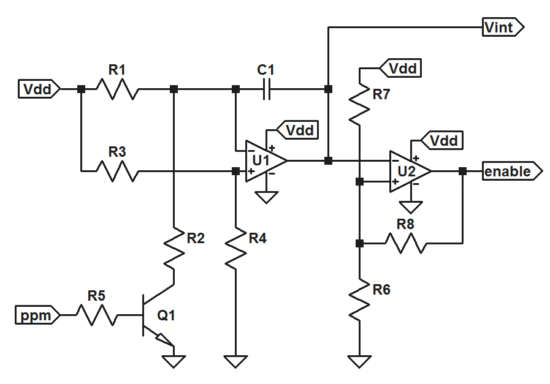
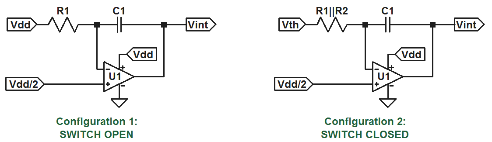

Pulse Width Comparator
Hypothetical problem: I have a system with multiple PWM controlled actuators, and I desire to have the capability to remotely switch between autonomous feedback control and manual radio control. Ideally, I would like the manual controls to continue to work in the case that the feedback controller (MCU) stops working. And let's say I have an 8 channel radio reciever with 8 individual PWM outputs.
The task of switching between manual and autonomous control for N actuators is easily accomplished with N 2 input multiplexers. This is no big deal. Controlling the multiplexers on the other hand requires some work. If we are to use one of the RC channels to do the task, we need to be able to assign two distinct digital values to two different pulse widths, or ranges of widths in some way. In other words, we need a circuit which effectively compares the pulse width from a reciever channel with a reference, and output either a high or low signal accordingly.
Time Measurement: The Integrator
From what I gather from googling, most multichannel RC systems use a ppm signal with delays ranging from 1 to 2ms, with a frame period of approximately 20ms. Some sources claim 22.5ms, some 27ms... but the 1 to 2 ms range for pulse separation (or pulse width once decoded as separate pwm channels) seems to be very standard. For the purpose of solving our problem, we simply need to be able to detect the difference between a long and a short pulse.
An easy analog way to infer the duration of a pulse is to use an integrator: starting with a zero output, just apply a constant input for the duration of the pulse, and a zero input otherwise. Once the pulse has passed, measure the voltage at the output and congratulations: given that you know the values of your resistor and your capacitor, and the input voltage, you now know how much time has elapsed. We could make a very accurate pulse width to analog voltage converter using a resettable integrator and a sample and hold circuit, and then apply that signal to a simple voltage comparator, but two things: (1) we don't have to do that, and (2) we don't want to do that. There is an easier way.
Modification of a Common Circuit
Probably everyone has seen the following circuit in the LM324 datasheet
It turns out, this will do exactly what we need if we (1) remove the feedback, and instead apply the pulse to the base of the bjt and (2) change a couple resistor values and the capacitor value. The circuit we are interested in looks like this:
Since the bjt is operating as a switch, the integrator section takes two distinct configurations: one when the switch is open (pulse signal low) and another when the switch is closed (pulse signal high).
(Note that the voltage labled Vth is the thevenin equivalent voltage of the formed by the R1/R2 resistor divider across the source voltage: Vth = R2/(R1+R2)Vdd)
The output of a simple op amp integrator like this is given by:
\[v_{int}(t) = -\frac{1}{RC}\int_0^t{v_{in}(\tau)\,d\tau}\]where "Vin" is the difference between the voltage at the integrator input and the voltage at the op amp's noninverting input. In the circuits above, the inputs are constant voltages, so the integrals reduces to the products of the input voltages and the elapsed time in seconds. For configuration 1, we have:
\[v_{int(low)}(t) = -\frac{Vdd}{2R_1 C_1}t\]For configuration 2, we have:
\[v_{int(high)}(t) = \frac{(R_1 - R_2)Vdd}{2R_1 R_2 C_1}t\]In the time domain, these are ramps with well defined slopes. Now we have to decide what to do with this information.
Design
We want this circuit to be able to distinguish between long pulses (1.5 to 2ms) and short pulses (1 to 1.5ms). Can this be done? Well, looking at the output equations above, we see that when the switch is open (low input signal) the slope is negative. On the other hand, when the switch is closed (high input signal), the slope will be positive if R1 > R2. So an incoming pulse signal will cause the output to be something like an asymetrical triangle wave.
If we were trying to get a stable periodic output, we would want the ratio of the slopes to satisfy the following:
\[m_1 t_{low} = -m_2 t_{high}\]If we did this, we would expect an output like this:

if the pulse width were increased, the increase in the output voltage over the interval "t high" will excede the magnitude of the decrease over the interval "t low". The average value of the output would then increase until the amplifier saturates. The opposite would be true if the pulse width were reduced -- ultimately the amplifier will saturate in the opposite direction. This is exactly the behavior we were looking for. So let's design this thing to give a stable asymetrical triangle wave output with an input with a period of 20ms and a pulse width is 1.5ms. Let's set the ratio of the slopes to be:
\[\frac{m_2}{m_1} = -\frac{20ms - 1.5ms}{1.5ms} =-\frac{37}{3}\]Using the equations above, we get:
\[\frac{m_2}{m_1} = \frac{\frac{(R_1-R_2)Vdd}{2R_1 R_2 C_1}}{-\frac{Vdd}{2R_1 C_1}} = \frac{R_2-R_1}{R_2}\]Combining and simplifying, we get:
\[R_1 = \frac{40}{3}R_2\]Note that this is dependent not only on the pulse width in question, but also on the pulse signal period.
The next thing to decide is what the magnitudes of the slopes should be. There are a couple considerations: since we are opperating with a Vdd of 5V, and a pulse period of 20ms, we certainly don't want any slopes greater than 250 V/s (when pulse signal is low). We also don't want the circuit to respond too slowly. Decreasing the slopes has the effect of increasing the noise margin, and at the same time has the effect of reducing the speed of the cirucit. Let's say we want this thing to be able to do it's job in under 1/2 of a second. The minimum slope would then be 10 V/s (when pulse signal is low).
Using these requrements and the equation above for the output voltage during the "off" interval, we get:
\[10 < \frac{5}{2R_1 C_1} < 250\]The time constant should thus be in the range:
\[10ms < R_1 C_1 < 250ms\]And that's all it takes. I made a quick version of this circuit using resistor and capacitor values that were both easy to find and reasonably close to providing the specs I wanted. I ended up with a R1C1 time constant of 30ms, and an R1/R2 ratio of 15. Also, I didn't mention it, but the second op amp is configured as a schmitt trigger to give a nice digital output. Everyone probably already knew that.

I have an OSEP pro mini providing the PWM signal, with the pulse width controlled by the pot on the right. The pulse width comparator is everything in between the pro mini and the LED, if you can see that. The two 7400 quad nand gates are wired as a 2 bit, 2 input multiplexer. The inputs and outputs of these are the two red leads coming in at the bottom, the two orange leads coming in at the top, and the two green leads going off to the side, repsectively. I took some scope snape shots:

Above, I applied a 1ms pulse, and below I applied a 2ms pulse: